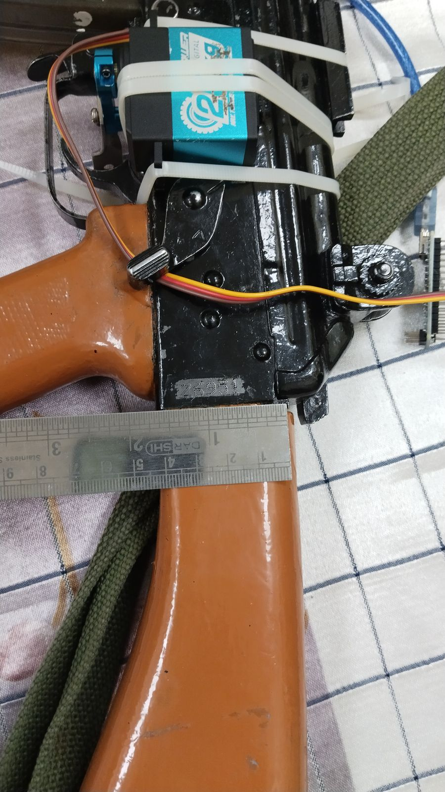
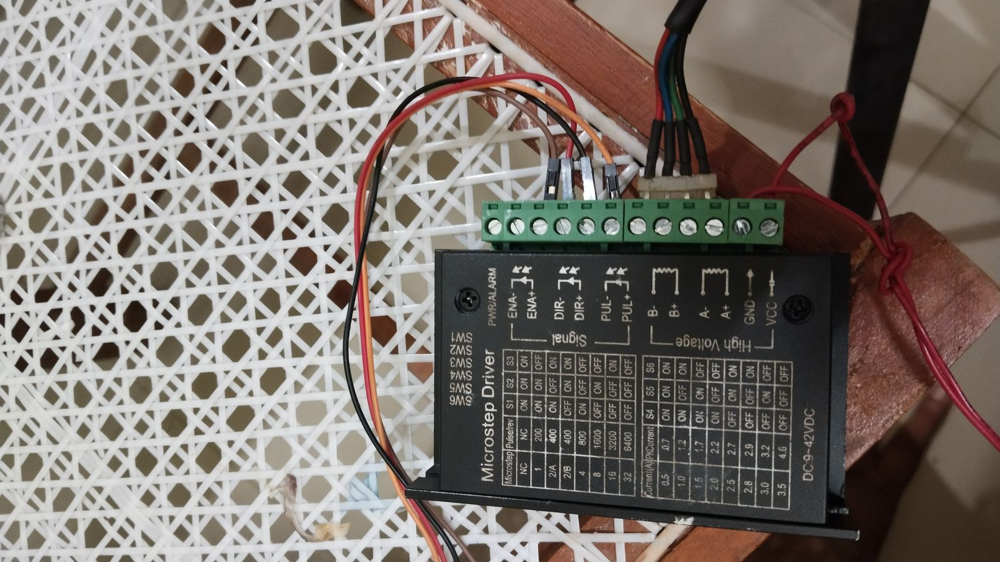
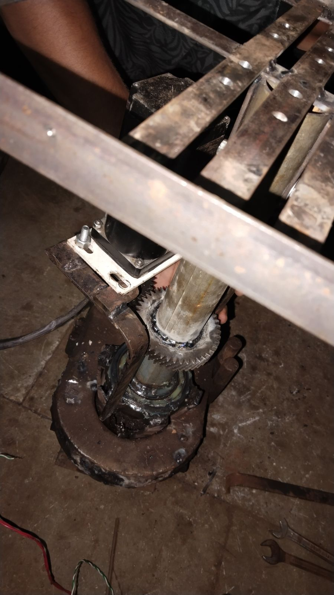
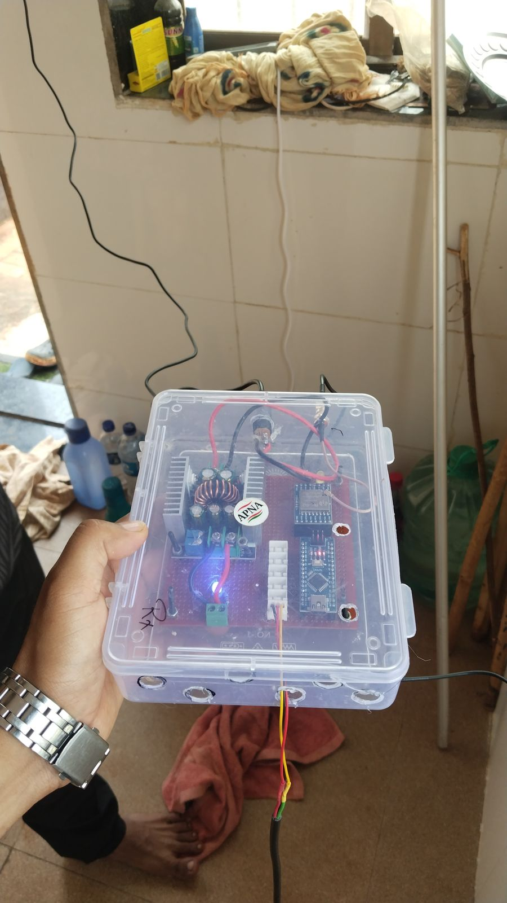
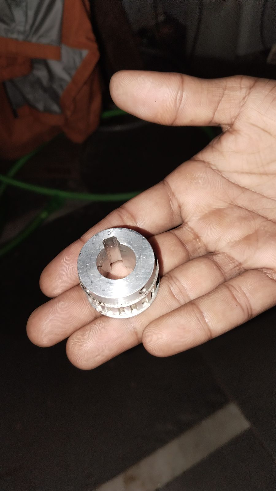
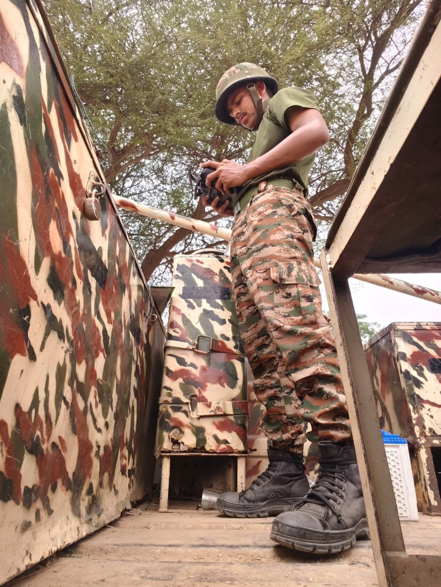
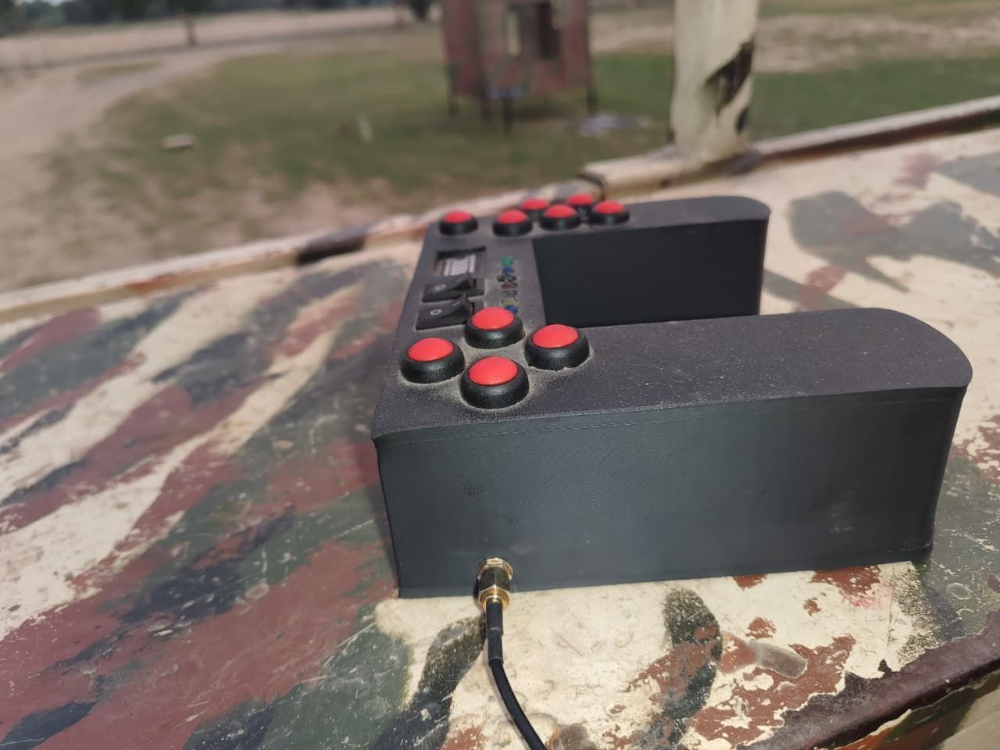

Home / Technology
How it works
Detection, tracking and control — built as one system.
Computer vision identifies and follows the target; the mechanical platform keeps it framed; the operator decides. Every layer in that chain is designed in-house.
Pipeline
From pixels to a decision
The tracker runs on an edge computer at the site. A live camera feed is divided into a search grid; each cell is scored continuously, and a confidence label follows the best candidate. When confidence holds, the platform locks and the gimbal follows the target.
- Grid-based search with per-cell confidence scoring
- Target box with acquisition state: acq → lock → coast
- Telemetry for lock, focus, digital zoom, gimbal settling and command TX rate
- Multiple simultaneous tracks with priority selection
Engineering
Actuation designed and measured in-house
The trigger units are servo-driven, bracketed to the receiver and measured by hand before every iteration. The azimuth drive uses a stepper motor with a geared slew column; the elevation arm uses a machined screw mechanism.






Command & control
An operator console you can carry
Control runs from a laptop or a handheld console with joysticks and toggles, over a radio or wired link. Automatic mode lets the system search, lock and follow; manual mode hands full authority back to the operator.
- Automatic and manual engagement modes
- Handheld console with dual thumb-sticks and function toggles
- Relay board and field wiring serviceable on the vehicle bed
- Runbook-driven startup so any crew member can bring the system up


Roadmap
Designed to evolve with the threat
- Gen1 · in service
Intelligent surveillance and response
AI detection and tracking, 360° azimuth, 75° elevation, five trigger units, vehicle or static mount.
- Gen2 · in development
Layered defence
Kinetic plus electronic warfare, day/night PTZ with 30× zoom, LiDAR, edge AI, 2 km wireless video, 5 km fibre.
- Gen3 · concept
Autonomous and networked
Networked sensors, autonomous coordination and future payload options. Published as a direction of work, not as delivered capability.